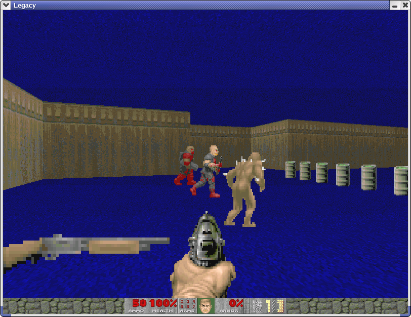
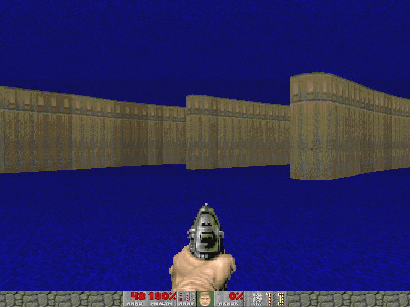

| User docs | Developer docs | Download | Project page | Examples | Screenshots | Credits | Legal |
If you want to generate a DOOM map, you need to use a level editor and manually create the map, either from scratch, or from a template. Although this works well for most map creation scenarios, it would be nifty if maps could be generated programmatically. This would allow maps to be generated for Cougaar agent community visualization, or PMD problem visualization, or from a floor plan.
Thus, Ruby-DOOM provides a scripting API for creating DOOM maps. It also provides higher-level APIs to make map creation easier.
Here's an example of what you can do with Ruby-DOOM:

You'll need a couple of things to generate and play DOOM maps using Ruby-DOOM:
There are two ways to generate a map - both ways involve writing a small script in Ruby. This script will call various functions in the Ruby-DOOM API that will set up your map - walls, player position, etc. There are some examples in the examples.rb script in the release, but here are some more details.
Here's a script which will create a map from a monochrome uncompressed bitmap:
b = BMPMap.new("wiggly.bmp")
b.scale_factor = 2
b.thinning_factor = 10
b.set_player Point.new(400, 400)
b.create_wad("new.wad")
The bitmap has to be monochrome and uncompressed, and it has to be drawn with a one-pixel-thick line that can't cross itself - in other words, a simple closed curve.
Here's a script that creates a simple map with some barrels and a couple of bad guys for good shootin' fun:
require "ruby-doom.rb"
m = SimpleLineMap.new(Path.new(0, 1000, "e300/n200/e300/s200/e800/s500/w800/s200/w300/n200/w300/n400"))
m.set_player Point.new(50,900)
m.add_sergeant Point.new(400,700)
m.add_commando Point.new(400,800)
m.add_imp Point.new(400,600)
m.add_shotgun Point.new(150, 900)
550.step(900, 40) {|x| m.add_barrel Point.new(x,900) }
m.create_wad("new.wad")
The important part is the Path.new line - that's where the map outline is specified using a series of directions and lengths separated by slashes - i.e., east 600, north 200, and so on. Note that the path needs to run clockwise, it must be a closed path (i.e., the last leg should stop at the starting point), and it can't cross back on itself.
After you've generated a map (i.e., a ".wad" file), you need to run it thru the aforementioned node builder. With DOOMBSP, this is as simple as:
./bsp new.wad -o out.wad
That's it! Your new map is ready to play - go shoot those barrels!
To make it easier to prototype stuff, you can also render small maps using a Nethack-style renderer, i.e.:
$ ./path_creation_example.rb -nethack . . . . . . . . . . . . . . . . . . . . . . . . . . . . . . . . . . . . . . . . . . . . . . . . . . . . . . . . . . . . . . . . . . . . . . . . . . . . . . . . . . . . . . . . . . . . . . . . . . . . . . . . . . . . . . . . . . . . . . . . . . . . . . . . . . . . . . . . . . . . . . . . . . . . . . . . . . . . . . . . . . . . . . . . . . . . . . . . . . . . . . . . . . . . . . . . . . . . . . . . . . . . . . X X X X X . . . . . . . . . . . . . . . X . . . X . . . . . . . . . X X X X X X X . . . X X X . . . . . . . X . . . . . . . . . . . X . . . . . . . X . . . . . . . . . . . X . . . . . . . X . . . . . . . . . . . X . . . . . . . X . . . . . . . . . . . X . . . . . . . X X X X X X X . . . X X X . . . . . . . . . . . . . X . . . X . . . . . . . . . . . . . . . X X X X X . . . . . . . . . Map generated from e6/n2/e4/s2/e2/s5/w2/s2/w4/n2/w6/n5
You can also generate a map using a repeating pattern, see repeating_pattern_example.rb for an example of how to do this.
You can also read in wads and see information about them; here's a sample run:
$ ./ruby-doom.rb -v Reading WAD into memory Done reading, building the object model Created MAP01 Created THINGS Created LINEDEFS Created SIDEDEFS Created VERTEXES Created SEGS Created SSECTORS Created NODES Created SECTORS Created REJECT Created BLOCKMAP Object model built The file ../../test_wads/simple.wad is a 900 byte PWAD It's got 11 lumps, the directory started at byte 724 MAP01 (0 bytes) THINGS (10 bytes) - Player 1 at (224,-416) facing east; flags = 7 LINEDEFS (112 bytes) - Linedef from 0 to 1; attribute flag is 1; special fx is 0; tag is 0; right sidedef is 0; left sidedef is -1 - Linedef from 1 to 2; attribute flag is 1; special fx is 0; tag is 0; right sidedef is 1; left sidedef is -1 - Linedef from 2 to 3; attribute flag is 1; special fx is 0; tag is 0; right sidedef is 2; left sidedef is -1 - Linedef from 3 to 0; attribute flag is 1; special fx is 0; tag is 0; right sidedef is 3; left sidedef is -1 - Linedef from 4 to 5; attribute flag is 1; special fx is 0; tag is 0; right sidedef is 4; left sidedef is -1 - Linedef from 5 to 6; attribute flag is 1; special fx is 0; tag is 0; right sidedef is 5; left sidedef is -1 - Linedef from 6 to 7; attribute flag is 1; special fx is 0; tag is 0; right sidedef is 6; left sidedef is -1 - Linedef from 7 to 4; attribute flag is 1; special fx is 0; tag is 0; right sidedef is 7; left sidedef is -1 SIDEDEFS (240 bytes) - Sidedef for sector 0; upper/lower/middle textures are -/-/BROWN96 with offsets of 0/0 - Sidedef for sector 0; upper/lower/middle textures are -/-/BROWN96 with offsets of 0/0 - Sidedef for sector 0; upper/lower/middle textures are -/-/BROWN96 with offsets of 0/0 - Sidedef for sector 0; upper/lower/middle textures are -/-/BROWN96 with offsets of 0/0 - Sidedef for sector 1; upper/lower/middle textures are -/-/BROWN96 with offsets of 0/0 - Sidedef for sector 1; upper/lower/middle textures are -/-/BROWN96 with offsets of 0/0 - Sidedef for sector 1; upper/lower/middle textures are -/-/BROWN96 with offsets of 0/0 - Sidedef for sector 1; upper/lower/middle textures are -/-/BROWN96 with offsets of 0/0 VERTEXES (32 bytes) - Vertex at (64,-320) - Vertex at (384,-320) - Vertex at (384,-512) - Vertex at (64,-512) - Vertex at (640,-320) - Vertex at (896,-320) - Vertex at (896,-512) - Vertex at (640,-512) SEGS (96 bytes) SSECTORS (8 bytes) NODES (28 bytes) SECTORS (52 bytes) - Sector floor/ceiling heights 0/128; floor/ceiling textures FLAT14/FLAT14; light = 128; special = 0; tag = 0 - Sector floor/ceiling heights 0/128; floor/ceiling textures FLAT14/FLAT14; light = 128; special = 0; tag = 0 REJECT (1 bytes) BLOCKMAP (132 bytes)
I'll try to document the wad file structure as I go. Props go out to the many folks out there who have figured out this stuff before I did. Hopefully I can summarize some of the important points here.
Header - a 12 byte sequence. 80, 87, 65, 68, 11, 0, 0, 0, 212, 2, 0, 0, 0
Directory entries - a series of 16 byte sequences. 13, 0, 0, 0, 10, 0, 0, 0, 84, 72, 73, 78, 71, 83, 0, 0
Lumps - a bunch of different kinds of data of variable length.
bytes.pack("C4").unpack("V")[0]
Also, I'm a bit of a dolt, so I had to do this to understand this byte packing order. 0 0 2 212 converted to binary is 00000000 00000000 00000010 11001010. So the 1 is in the 512 place, so 512 + 212 = 724.
Made using the SimpleLineMap class.
Made using SimpleLineMap; lots of barrels and bad guys.
Made using the bitmap-to-DOOM map converter.
|
|
 |
Thanks to the many people who made this little project possible:
This section has been copied almost verbatim from the UDS. They put things so well there it seems a shame not to reuse their efforts. So, here we go:
Please make sure you have read id Software's LICENSE.DOC and README files that came with DOOM. Pertinent portions of those files are repeated here.
The LICENSE.DOC says:
"You shall not: rent, lease, sell, distribute for money or other consideration, modify, translate, disassemble, decompile, reverse engineer, or create derivative works based upon the Software. Notwithstanding the foregoing, you may create a map editor, modify maps and make your own maps (collectively referenced as the "Permitted Derivative Works") for the Software. You may not sell or distribute any Permitted Derivative Works but you may exchange the Permitted Derivative Works at no charge amongst other end-users. In order to commercially distribute any such map editor or data utility you must first sign id's Data Utility License and id reserves the right to deny authorization to commercial distribute the any such map editor or data utility. You may request a copy of the Data Editor License from id."
"(except for backup purposes) You may not otherwise reproduce, copy or disclose to others, in whole or in any part, the Software."
The README says:
"id Software respectfully requests that you do not modify the levels for the shareware version of DOOM. We feel that the distribution of new levels that work with the shareware version of DOOM will lessen a potential user's incentive to purchase the registered version."
"If you would like to work with modified levels of DOOM, we encourage you to purchase the registered version of the game."
If you are making add-ons, plan on them not working on the shareware game, and plan on including statements about the trademarks and copyrights that id Software owns, as well as disclaimers that they won't support your add-on product, nor will they support DOOM after it has been modified.